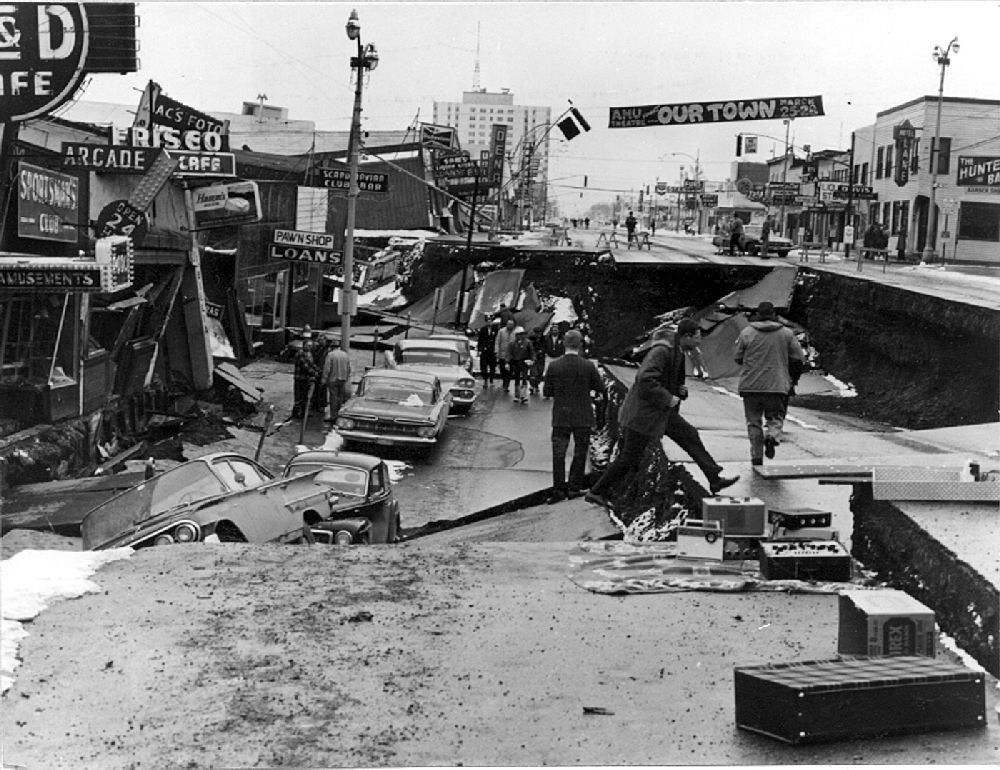
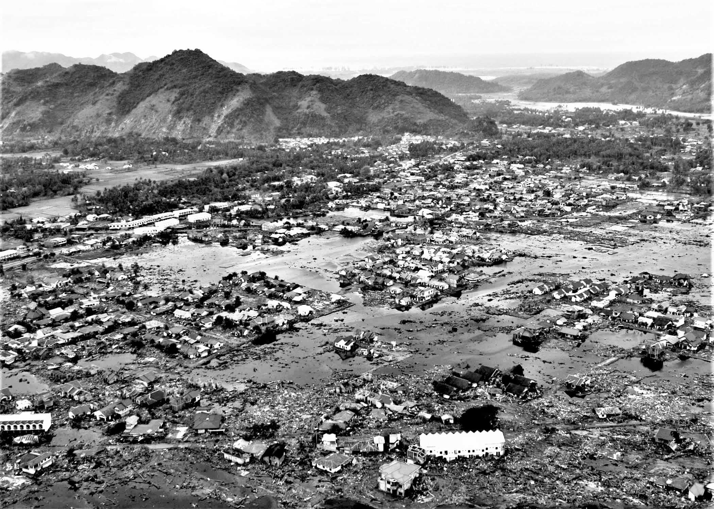

Introduction to Earthquake
What is an Earthquake?
An earthquake is a weak to violent shaking of the ground produced by the sudden movement of rock materials below the earth’s surface.
The earthquakes originate in tectonic plate boundary. The focus is point inside the earth where the earthquake started, sometimes called the hypocenter, and the point on the surface of the earth directly above the focus is called the epicenter.
Source: www.phivolcs.dost.gov.ph
Types of Earthquake
Tectonic Earthquake
Tectonic earthquakes are produced by sudden movement along faults and plate boundaries.
Volcanic Earthquake
Earthquakes induced by rising lava or magma beneath active volcanoes is called volcanic earthquakes.
Earthquake Monitoring System
At present, PHIVOLCS operates 108 (as of December 2020) seismic monitoring stations all over the Philippines...
Occurrence
Where does earthquake usually occurs?
Earthquakes happen every day all over the world, along both tectonic plate edges and interiors. Earthquakes occur along faults, which are fractures between blocks of rock that allow the blocks to move relative to one another. Faults are caused by the bumping and sliding that plates do and are more common near the edges of the plates.
Plates, Motion, Faults, Energy Release
The Earth's crust (the outer layer of the planet) is made up of several pieces called tectonic plates and most earthquakes occur along their edges. The plates under the oceans are called oceanic plates. Plates that are not under the ocean are continental plates. The plates are moved around by the motion of a deeper part of the earth (the mantle) that lies underneath the crust, and by the weight of oceanic plates that pulls them down below oceanic plates. These plates are always moving apart, bumping, or sliding past each other at about the same speed that your fingernails grow. Earthquakes usually occur where two plates are running into each other or sliding past each other.
What are the 3 largest occurence of earthquake?
Valdivia Earthquake, Chile, 22 May 1960 (9.5)
Prince William Sound, Alaska, 28 March 1964 (9.2)

Sumatra, Indonesia, 26 December 2004 (9.1)

Overview of Earthquake
Seismology
Humans have experienced earthquakes as long as we have existed as a species. Many cultures developed legends to explain them, including envisioning large creatures within the Earth that were moving to create the earthquake. The study of earthquakes, called seismology, began to take off with the development of instruments that can detect earthquakes.
A seismograph is an instrument used to measure vibrations moving through the Earth (left side picture). A typical seismograph consists of a mass suspended on a string from a frame that moves as the Earth’s surface moves. A rotating drum is attached to the frame, and a pen attached to the mass, so that the relative motion is recorded in a seismogram. It is the frame (attached to the ground) that moves during an earthquake. The suspended mass generally stays still due to inertia (the tendency of a body to stay at rest and resist movement).
Source: Yamaguchi CC BY-SA 3.0
{kind=link}
How Are Earthquakes Measured?
The consequences of earthquakes can be quantified in death tolls and damage to structures, and also in terms of the force and amount of ground shaking. These types of measurements are divided into two types of measurements. Qualitative measures of the damage inflicted by an earthquake (measures that depend upon factors such as the local geology and population density) are referred to as intensity measures. Quantitative measures of the energy released by an earthquake are termed magnitude measures. Both measures provide meaningful data for interpreting the relative importance of an earthquake.
Frequently Asked Questions
-
What is your name?
your answer here
-
What is your name?
your answer here
-
What is your name?
your answer here
-
What is your name?
your answer here
-
What is your name?
your answer here
Researchers
Marisse Paires
StudentCurrently studying at Biliran Province State University. Taking Bachelor of Secondary Education Major in Science.
Age: 21
Birthdate: August 30, 2001
Birthplace: Sto. Niño, Naval, Biliran
Current Address: Sto. Niño, Naval, Biliran
Motto:
The fruit of happiness comes from what we are doing and preparing now.Ivan Cuevas
StudentCurrently studying at Biliran Province State University. Taking Bachelor of Secondary Education Major in Science.
Age: 20
Birthdate: August 5, 2002
Birthplace: Culaba, Biliran
Current Address: Bool West, Culaba, Biliran
Motto:
Success is my goal!Reynalene Higum
StudentCurrently studying at Biliran Province State University. Taking Bachelor of Secondary Education Major in Science.
Age: 21
Birthdate: July 10, 2001
Birthplace: Carigara, Leyte
Current Address: Binibihan, Carigara, Leyte